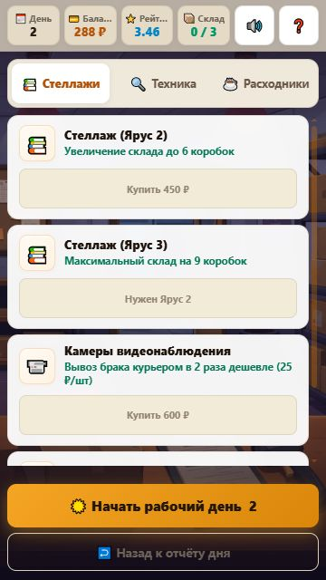
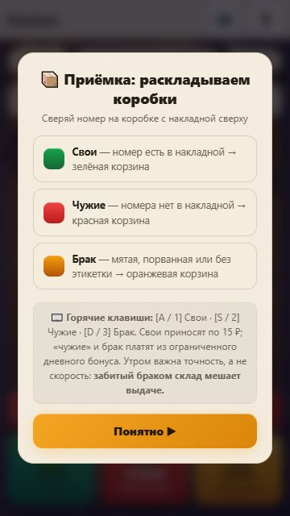
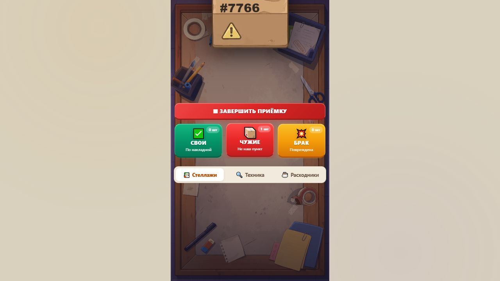

Протокол проверки игры
28.09.2026. Проверялся оригинал из архива и отдельная объединённая исправленная версия. Локальный Chromium, управление через видимые кнопки и клавиатуру; игровые переменные в браузере не подменялись.
Пройденные сценарии
| Сценарий |
Наблюдение |
| Оригинал: обучение → перезагрузка |
Вместо приёмки появлялся клиент при пустом складе. Ошибка воспроизведена |
| Оригинал: приёмка на большом экране |
Магазин оставался видимым и вытеснял рабочее поле |
| Исправление: обучение → перезагрузка |
Открывается приёмка; повторный вход в подсказку ставит таймер на паузу |
| Приёмка |
Сортировка своей, чужой и повреждённой коробки; итог 2 принятых заказа, 4 верных действия, 70 ₽ |
| Отсутствующий заказ |
Обещание Марине по заказу #7105 сохранилось; после перезагрузки открылся следующий посетитель |
| Выдача Екатерине #7102 |
Удержание штрихкода мышью завершило скан; баланс 220 → 284 ₽, рейтинг 3,42 → 3,44, склад 2 → 1 |
| Перезагрузка результата |
Открылась Нина Павловна, баланс остался 284 ₽, склад 1. Повторной выплаты не было |
| Выдача Нине #7202 |
Баланс 348 ₽, рейтинг 3,46, склад пуст; появилась кнопка завершения смены |
| Итог дня 1 |
Доход 198 ₽, аренда 0 ₽ по стартовым каникулам, баланс 348 ₽. Открылись магазин и следующий день |
| Реклама без SDK |
Кнопка бесплатного кофе показала «Реклама доступна только на платформе Яндекс Игр». Кофе и деньги не начислены |
| Покупка кофе |
Списалось 60 ₽: 348 → 288 ₽. После перезагрузки покупка и баланс сохранились |
| Утро дня 2 |
Таймер 40 с с кофе; обещанный #7105 попал в накладную как долг. Подсказка остановила таймер |
Все шесть основных экранов открыты действиями игрока: приёмка, сцена, склад, результат посетителя, итог смены, магазин. Это один путь через первую смену и начало второй, а не ручное прохождение всех 84 дней и всех веток диалогов.
Размеры и внешний вид
На экране магазина измерены фактические innerWidth/innerHeight, ширина документа и число видимых игровых экранов:
| Размер в CSS-пикселях |
Горизонтальное переполнение |
Активные экраны |
| 360 × 560 |
нет |
только магазин |
| 360 × 640 |
нет |
только магазин |
| 390 × 844 |
нет |
только магазин |
| 768 × 1024 |
нет |
только магазин |
| 1280 × 720 |
нет |
только магазин |
Сканер и подсказка также проверены при фактических 360 × 640. Ранние технические снимки fixed-*-compact-277x492.png сделаны при масштабе браузера, соответствующем 277 × 492 CSS-пикселям; их нельзя выдавать за эмуляцию телефона 360 × 640. После перезагрузки масштаб перепроверялся. Изменение ширины окна не воспроизводит процессор, сенсорный ввод, память и операционную систему телефона.
Магазин исправленной версии, 360 × 640

Подсказка приёмки, 360 × 640

Ошибка исходной версии

Автоматические проверки
На финальном HTML прошли 14 проверок SDK/паузы, 9 сохранений/наград, 6 экономики и 2 группы дополнительных проверок облака/завершения сканирования. Исполнялись настоящие функции игры в Node VM с моделью DOM, часов и SDK. Оба исполняемых JS-блока отдельно прошли проверку синтаксиса. Полный машинный результат с SHA-256 сборки.
В этих сценариях проверены в том числе: поздний и зависший SDK; пересечение нескольких причин паузы; повторные рекламные колбэки; сохранение должника; повторная выдача; исходы обещания/скандала/курьера; лимиты расходов и сохранение уже оплаченного дня; отсутствие записи в облако после неудачного чтения.
В доступном журнале браузера при проверке последней сборки ошибок JavaScript не обнаружено. /sdk.js вне Яндекс Игр отсутствует: локальный режим проверяет работу без платформы, а не исправность настоящего SDK.
Что ещё не подтверждено
- Настоящий rewarded и interstitial, платформенные события, сохранение между двумя авторизованными устройствами. Консоль перенаправляет на вход Яндекс ID.
- Работа на реальных Android/iPhone, удержание пальцем, смена ориентации, возврат из фона, отсутствие системного медиаплеера, производительность и расход памяти на слабом телефоне.
- Все редкие сюжетные сочетания и длинная кампания; поздняя экономика проверена расчётом и исполняемыми сценариями, а не многодневным ручным прохождением.
- Полноценное восстановление повреждённого сохранения. Это отдельно отмечено в аудите механик.
Исправленная версия предназначена для загрузки в черновик и завершения этих проверок. Прохождение модерации не заявлено.